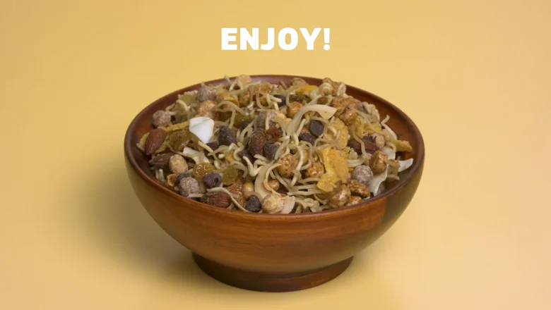

Sweet and Salty Ramen

Ingredients
- 2 packages of Maruchan Soy Sauce Flavor Ramen
- 1/2 cup corn flakes
- 1 cup butter toffee peanuts
- 1/2 cup golden raisins
- 1/2 cup coconut chips
- 1/2 cup smoked almonds
- 1/2 cup chocolate chips
- 1/2 cup peanut butter puff cereal
- Frying oil, as needed
Directions
- Cook 2 packages of Maruchan Soy Sauce Flavor Ramen noodles in 4 cups boiling water for 3 minutes, stirring occasionally, then turn off the heat. Add the contents of the seasoning packet and stir well for 1 minute until seasoning is fully dissolved.
- Strain off the broth, then let noodles cool and dry on a sheet tray.
- Heat frying oil to 400℉ and deep fry noodles for 2-3 minutes until super crispy. Strain off excess oil and add to a mixing bowl.
- Add corn flakes, toffee peanuts, golden raisins, coconut chips, smoked almonds, chocolate chips and peanut butter puff cereal, toss and enjoy!
Nutrition Facts
1 serving:
- 290 calories
- 12g fat
- 0mg cholesterol
- 1180mg sodium
- 39g carbohydrate
- 2g sugars
- 3g fiber
- 6g protein